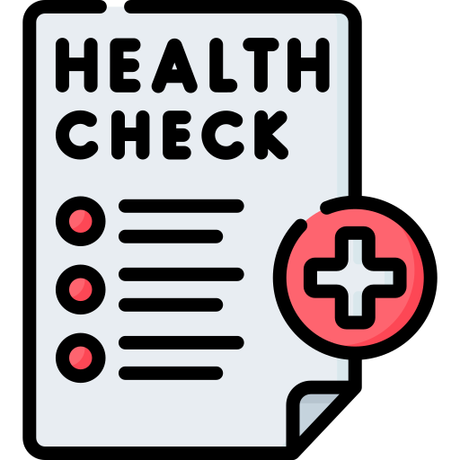
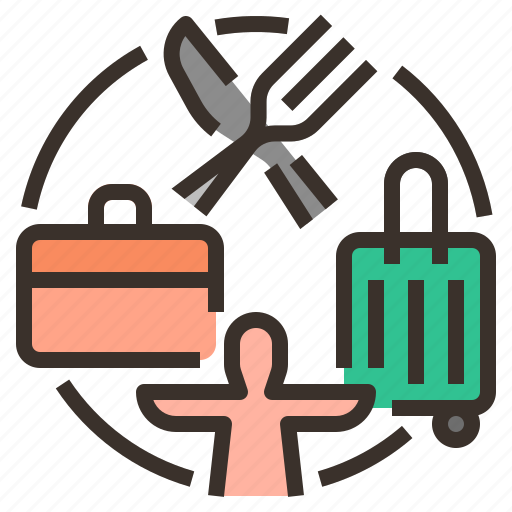

Health Assessment
It is a comprehensive evaluation of your physical, mental, and emotional wellbeing offering valuable insight into your overall health status.

Workout Plans
Get workout plans, customize routines, and schedule activities that fit your lifestyle.

Daily Activities
This section allows the user to log their meals, track calorie intake, and monitor nutritional content.
Progress Charts
Progree Visuaisation with intuitive charts.